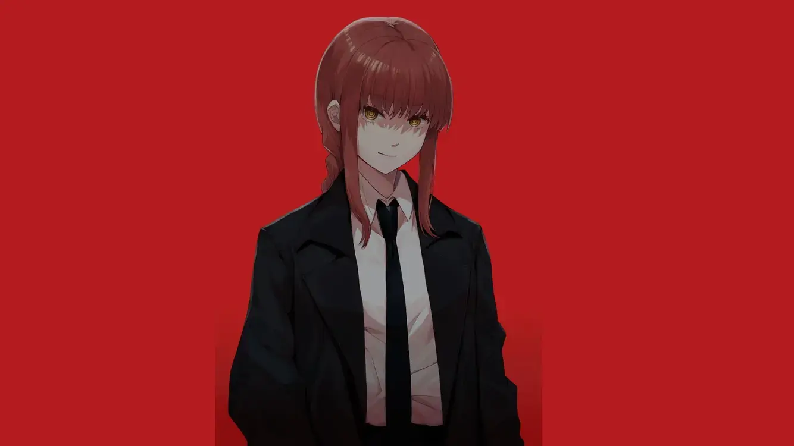

Makima

Makima is one of the main characters in the first arc of Chainsaw Man. Early in the story, we learn that she is a senior member of the Public Safety Devil Hunters and leader of an experimental unit Tokyo Special Division 4. This leads us to her first appearance, where she finds Denji after he first transforms into the Chainsaw Man (first anime episode) and offers him to join her squad. To Denji, Makima appears to be the most caring and friendly person in his life, the first one to treat him as a human. He even develops romantic feelings for her right after their first encounter.